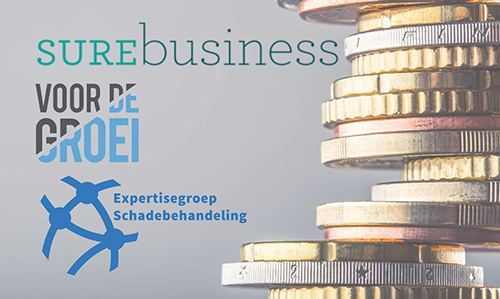

Maak eens kennis met partners voor Zakelijke klanten: gratis bijeenkomst
De financieel adviseur begeleidt zijn klanten bij hun keuzes. Onderdeel van deze verantwoordelijkheid is dat de adviseur op de hoogte is van nieuwe producten, aanbieders, ontwikkelingen en visies. Om jou te helpen organiseert Bureau DFO bijeenkomsten waarin partijen met een meerwaarde voor het kantoor en hun relaties zich voorstellen. Aan deelname zijn geen kosten verbonden.
Artikelnummer . Bestellen en betalen gaat via de webshop op dfobv.nl.
Omschrijving
Nieuwe partners om jouw kantoor te versterken: Zakelijk
Deze bijeenkomst komt in 2025 weer op de agenda
SUREbusiness:De beroepsaansprakelijkheidsverzekering: wie, wat en hoe?
SUREbusiness is hét kennis en vergelijksplatform voor de zakelijke assurantieadviseur met toegang tot verzekeringsoplossingen. Tijdens onze bijeenkomst bij DFO praten we je graag bij over de dienstverlening van SUREbusiness en gaan we aan de hand van een casus dieper in op de advisering van beroepsaansprakelijkheidsrisico’s. Voor wie sluit je een beroepsaansprakelijkheidsverzekering, wat valt er onder dekking én hoe kan je bij SUREbusiness een goede vergelijking maken tussen verzekeraars.
Voordegroei: De zakelijke financieringsmarkt in beweging, kansen voor financieel adviseurs
Het Nederlandse MKB is de motor van onze economie. Zonder ondernemers is er geen toekomst. Wie staan er in deze economisch uitdagende tijden klaar om ondernemers te helpen hun bedrijf verder te brengen en daarmee de economische groei en werkgelegenheid te bevorderen?
De positie van de onafhankelijke zakelijk adviseur is uniek en biedt daardoor volop kansen. Sinds 2016 financiert Voordegroei het Nederlandse midden- en kleinbedrijf. Als financier werken wij daarbij altijd samen met zakelijk adviseurs. Samen hebben wij tal van ondernemers geholpen aan financiering waarmee zij konden doorgroeien of overnemen. Vele bedrijfspanden konden worden aangeschaft, opvolgingen konden worden gerealiseerd en overnames werden mogelijk gemaakt. Ook werd er geïnvesteerd in verduurzaming van de bedrijfsvoering.
Voordegroei gaat in op de belangrijkste ontwikkelingen in de financieringsmarkt en de kansen die die markt biedt voor onafhankelijke adviseurs in de zakelijke markt.
Expertisegroep Schadebehandeling: extra kennis bij calamiteitenSchadebehandeling dient zich te richten op de specifieke behoeften van elke klant en is daardoor een van de meest sprekende vormen van dienstverlening door de financieel adviseur. Daarnaast is het van belang om elke schadeafhandeling zo constructief mogelijk te benaderen, om voor de gegeven situatie de klant verzekeringstechnisch een optimale oplossing te bieden. Kortom, bij schadebehandeling worden inhoudelijke kennis, expertise en competenties van de schadebehandelaar gevraagd.
Om deze reden heeft Bureau DFO een Expertisegroep opgezet, waarbij u uw expertise en competenties uitbreidt en op de hoogte blijft van nieuwe concepten voor het behandelen van schade.
Aanmelden
Aan deelname zijn geen kosten verbonden. We bieden je een dag vol vakinformatie en een lekkere lunch aan. Wil je aan deze bijeenkomst deelnemen, meld je dan aan via de winkelwagen.
Passende opleidingen, masterclasses en documenten
Opleidingen van Bureau DFO
Praktijkgerichte trainingen, webinars en leergangen.
WebinarWebinar Actualiteiten Schade Particulier
Data en locaties: zie het opleidingsportaal
4-daagse opleiding Schade Zakelijk
Eerstvolgende: 11 mrt 2027 · Hoevelaken
Webinar Actualiteiten Schade Zakelijk
Data en locaties: zie het opleidingsportaal
Documenten & modellen
Direct toepasbaar in je praktijk, te bestellen in de webshop.
Naslagwerk